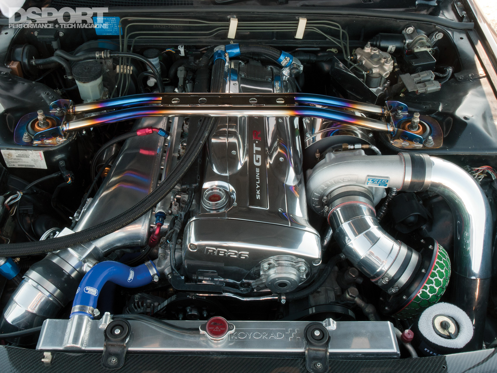

Nissan GTR motor
The RB26DETT is a very popular Nissan engine that can produce over 500 horsepower when modified with aftermarket parts and upgrades. It is a 2.6L inline-6 cylinder engine that was built for the Nissan Skyline GT-R. What makes the RB26DETT engine such a powerhouse is the fact that it is equipped with twin Garrett T28-type ceramic turbochargers. These turbos produce up to 10 psi of boost which helps it generate 276 horsepower from a stock 2.6L engine. From 1989 until 2002, Nissan produced the RB26DETT engine for use in the Nissan Skyline GT-R. This car was quickly nicknamed “Godzilla,” thanks in part to the enormous horsepower potential under the hood. All of the RB series engines, including the RB26DETT, were manufactured in Yokohama, Japan. Although the Skyline GT-R was only produced and sold in Japan, it has become extremely popular in the United States. Now that the 25 year import rule is in effect for the early Skyline GT-R models, collectors and race shops finally have a chance to get their hands on one. Another reason the Skyline GT-R is so popular is because it made multiple appearances in the Fast and Furious movie franchise. Most notably, a 1999 Skyline R34 GT-R was driven by Brian O’Conor (played by Paul Walker) in the movie 2 Fast 2 Furious. The Skyline GT-R engine is every tuners dream. It offers excellent stock horsepower, but is durable enough to take on almost any aftermarket upgrades you’re willing to throw at it.The name of the engine, RB26DETT, might seem random but it is actually a code developed by Nissan to describe the features.
What does RB26DETT stand for?
RB: Name of the engine family produced from 1985-2004
26: Displacement of 2.6L
D: Dual overhead cams (DOHC)
E: Electronically fuel-injected
TT: Twin turbochargers
Off the showroom floor the Skyline GT-R had 276 horsepower at 6800 rpm and 293 lb-ft of torque at 4400 rpm. With a few upgrades this engine has been known to produce anywhere from 500 to 1000 horsepower.
RB26DETT